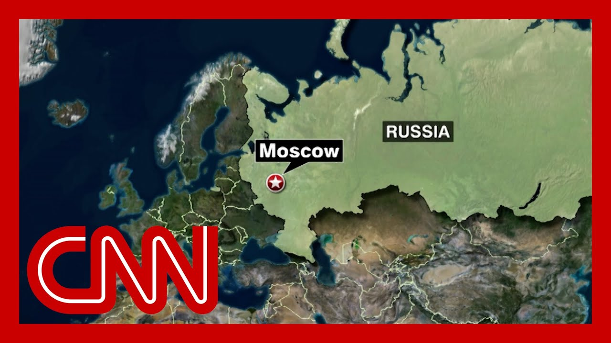

来B站一起耍【Global每日英语简报】
【乌克兰无人机袭击莫斯科，导致航班停飞，重大军事阅兵前夕】
Summary: Russian officials report a Ukrainian drone attack on Moscow, forcing airport closures with limited damage but significant disruption, likely aimed at undermining Russia's security and messaging ahead of Victory Day celebrations.
摘要： 俄罗斯官员称乌克兰无人机袭击莫斯科，迫使多个机场关闭，破坏有限但造成重大干扰，可能意在破坏俄罗斯的安全感并在胜利日庆祝活动前传递信息。

⏱️ Estimated Reading Time: 7 min
Russian officials say a Ukrainian drone attack on Moscow for several of the city's airports to close.
俄罗斯官员称乌克兰无人机袭击莫斯科，迫使该市多个机场关闭。
So far, Moscow's mayor says there have been no reports of serious damage or casualties.
截至目前，莫斯科市长表示尚未收到严重破坏或人员伤亡的报告。
However, emergency services are working to clear down drones from roadways.
然而，紧急服务部门正在清理道路上的无人机残骸。
Joining us now live from London is CNN's Clare Sebastian.
现在连线的是CNN驻伦敦的克莱尔·塞巴斯蒂安。
Good morning to you, Clare.
早上好，克莱尔。
So what more are you learning about this attack on Moscow?
关于这次对莫斯科的袭击，你还有哪些新消息？
Yeah, I mean, this is the second straight night that we've seen drones attacking Russia, including Moscow, this night.
是的，这是连续第二个晚上我们看到无人机袭击俄罗斯，包括莫斯科。
The Defense Ministry says 105 drones were shot down over multiple different regions, making it the largest of these two consecutive nights of attacks.
国防部称，105架无人机在多个不同地区被击落，这是连续两晚袭击中规模最大的一次。
About a dozen airports had to temporarily introduced flight restrictions, including four in Moscow.
约12个机场不得不临时实施飞行限制，其中4个位于莫斯科。
So some significant disruption there, though, as you say, damage is pretty limited.
因此造成了一些重大干扰，不过如你所说，破坏相当有限。
No reports of casualties in any of these regions as of yet, but I think if we look at recent commentary and it postulated drone attacks, destruction isn't always the point here.
目前这些地区尚无伤亡报告，但如果我们看看最近的评论和假设的无人机袭击，破坏并不总是重点。
Given that we had comments over the weekend from President Zelensky saying that he couldn't make any guarantees to foreign leaders heading to Russia's Victory Day celebrations at the end of this week.
鉴于泽连斯基总统周末的评论，他表示无法向本周晚些时候前往俄罗斯胜利日庆祝活动的外国领导人做出任何保证。
given that, you know, XI Jinping, the Chinese premier, is set to arrive in Moscow on Wednesday, I think this is quite likely designed to send a message.
考虑到中国总理习近平将于周三抵达莫斯科，我认为这很可能是为了传递一个信息。
And we haven't heard anything officially from Ukraine as of yet.
我们尚未收到乌克兰官方的任何消息。
But this is one way that Ukraine can embarrass Russia, can undermine its sense of security and undermine its efforts to use the victory celebrations to build public support for its war in Ukraine.
但这是乌克兰让俄罗斯难堪、削弱其安全感并破坏其利用胜利庆祝活动为乌克兰战争争取公众支持的一种方式。
And as Ukraine tries to, you know, call on its allies, especially the U.S., to ramp up pressure on Moscow to agree not to a three day ceasefire over Victory Day, but to a 30 day ceasefire.
乌克兰正试图呼吁其盟友，尤其是美国，加大对莫斯科的压力，要求其同意在胜利日期间不是停火三天，而是停火30天。
This is one way, I think, that Ukraine can take matters into its own hands.
我认为这是乌克兰可以自己掌控局势的一种方式。
Rosemary.
罗丝玛丽。
All right.
好的。
Thanks to Clare.
谢谢克莱尔。
Sebastian joining us live from London with that.
塞巴斯蒂安从伦敦为我们带来报道。
Well, Ukraine says its troops still have a presence in Russia's Kursk region and hold a buffer zone in the border areas.
乌克兰称其部队仍在俄罗斯库尔斯克地区存在，并在边境地区控制着一个缓冲区。
Last month, Russian President Vladimir Putin claimed that his forces had defeated the Ukrainian incursion there and they were aided by troops from North Korea.
上个月，俄罗斯总统弗拉基米尔·普京声称其部队在那里击败了乌克兰的入侵，并得到了朝鲜军队的援助。
CNN's Will Ripley has more on that.
CNN的威尔·里普利对此有更多报道。
It was the worst kept secret of the war in Ukraine for months.
这是乌克兰战争数月来最不保密的秘密。
North Korea and Russia denied teaming up on the battlefield, even as the evidence and casualties began piling up.
朝鲜和俄罗斯否认在战场上合作，尽管证据和伤亡开始堆积。
The Ukraine said they had a hard time capturing North Korean soldiers alive, claiming they blew off their own faces with grenades.
乌克兰表示他们很难活捉朝鲜士兵，声称他们用手榴弹炸毁了自己的脸。
Choosing death over the risk of exposing the mission.
选择死亡而不是暴露任务的风险。
Then, seemingly out of the blue, Comrade Kim Jong UN decided on our armed forces participation in the war and informed the Russian side.
然后，似乎突然之间，金正恩同志决定我们的武装部队参战并通知了俄方。
North Korean troops in Kursk honored on state TV, praised as selfless warriors shedding blood to defend a brother nation.
库尔斯克的朝鲜军队在国家电视台上受到表彰，被誉为为保卫兄弟国家流血的无私战士。
And today is Kim Jong UN, invoking a rarely cited mutual defense clause, saying Russian territory was under attack and North Korea answered the call.
今天是金正恩援引一项很少被引用的共同防御条款，称俄罗斯领土受到攻击，朝鲜响应了号召。
What other reasons would there be for both of them to reveal this essentially at the same time?
他们同时透露这一消息还有什么其他原因？
Right now, the Trump factor is perhaps paramount.
目前，特朗普因素可能是最重要的。
They've got a strong alliance.
他们有一个强大的联盟。
They have some leverage.
他们有一些筹码。
That leverage may have come at a cost.
这些筹码可能是有代价的。
Ever since Kim and Russian President Vladimir Putin signed their sweeping military pact in Pyongyang.
自从金正恩和俄罗斯总统弗拉基米尔·普京在平壤签署了全面的军事协议以来。
U.S. and South Korean officials say at least 12,000 North Korean troops have been rotated into Russia.
美国和韩国官员称至少有12,000名朝鲜士兵被轮换到俄罗斯。
South Korea's National Intelligence Service estimates 5000 North Korean casualties, including at least 600 deaths.
韩国国家情报院估计有5,000名朝鲜士兵伤亡，其中至少600人死亡。
Even in a country with such restrictions on information.
即使在一个对信息有如此限制的国家。
North Korea wouldn't be able to hide that many casualties from its people.
朝鲜也无法向人民隐瞒这么多伤亡。
Definitely not.
绝对不行。
And that may have been a big factor in why they had to come clean.
这可能是他们不得不坦白的一个重要因素。
CNN obtained handwritten battlefield notes from a dead North Korean soldier, revealing early days on the ground filled with loyalty but not clarity.
CNN获得了一名死亡的朝鲜士兵的手写战场笔记，揭示了早期在地面上的忠诚但不清晰的日子。
Diaries from two captured North Korean soldiers revealed many didn't know where they were or why they were fighting.
两名被俘朝鲜士兵的日记显示，许多人不知道他们在哪里或为什么而战。
The North Koreans even carried notes about using soldiers as bait in a drone attack.
朝鲜人甚至携带了关于在无人机袭击中使用士兵作为诱饵的笔记。
But Ukraine says the North Koreans are learning fast in real time, mastering drone warfare, artillery coordination, 21st century battlefield tactics more valuable and deadly than decades of military drills.
但乌克兰表示，朝鲜人正在实时快速学习，掌握无人机作战、炮兵协调、21世纪战场战术，比几十年的军事演习更有价值和致命。
There's even talk of North Korean soldiers marching in Russia's Victory Day parade next week.
甚至有传言称朝鲜士兵将参加下周俄罗斯的胜利日阅兵。
Whether or not Kim shows up, the message to Trump is clear.
无论金正恩是否出现，给特朗普的信息都很明确。
North Korea is no longer on the sidelines.
朝鲜不再置身事外。
Will Ripley, CNN, Taipei.
CNN威尔·里普利，台北报道。